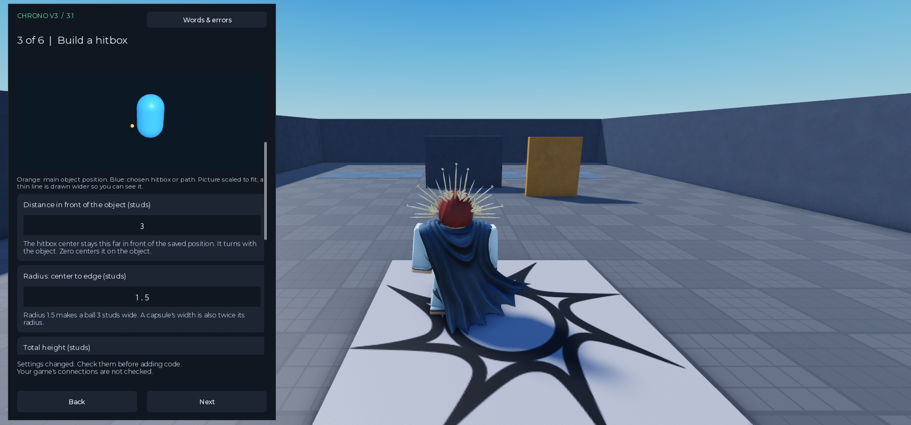

Roblox / Luau · Unofficial Chrono fork
Make contact.
Check the evidence.
Gameplay hitbox checks for the competitive game you already have. Your server supplies checked positions. ChronoFork records them and checks contacts. Your game decides the result.
Original project: Parihsz / Chrono.
Competitive branch developed with OpenAI Codex / AI, directed by VertimaXx.
Movement, animations, VFX and cutscenes stay in your existing systems.
One small set of connections
Built around your game's moves.
Tackles & ball contact
Choose a gameplay box, sphere or capsule. Your rules decide possession, teams, immunity and fouls.
Hit periods & cancellation
Query during a server-approved move. End it when the move finishes or is cancelled. Keep your animation system.
Explicit obstacle policy
Check rays and swept spheres. Add historical obstacle data if walls should block the move.
Explain first. Then configure.
A setup you can read.

Plain words, visible shapes.
The Studio plugin explains fields, shows a hitbox picture and lets you review generated code. Unknown terms have definitions and examples.
- 50 terms, 48 Core messages and 18 Connector explanations
- Decimal comma or point input
- Undo, Redo, rollback and no overwriting
- Disabled practice test using made-up data
Earlier V3.1 setup capture from the development lab; current 3.2 controls are documented below. The arena is not part of the download.
Search words & result messages →Connector/plugin 3.2 · 25 Oct 2026
Core capabilities, available in the plugin.
Choose earlier-position timing, repeated move checks, simulation-controlled recording, data-only objects, per-object limits, named body areas, multiple moves and obstacle providers. Customize unusual rules inside supplied package files. Core math stays unchanged.
One Studio client and deterministic server scenarios. These are integration checks, not fresh original-Chrono CPU or native-network benchmarks.
Earlier 3.1 combat example · 24 Oct 2026
The plugin supplies the connecting machinery.
Objects, events and generated calls
Choose existing actors, a position source and accepted-move points. Review edits before applying; keep unusual rules in supplied Hooks.
Three generated call blocks
The tested melee connection changed one original script. Six other original scripts stayed byte-identical. Movement mapping stayed inside the package.
Follow the exact combat example →80 / 80 integration cases
Baseline comparisons, real combat inputs, refused moves and actual movement flows. One client, zero added delay and rewind off; no production certification.
Inspect methods and case data →Recorded V3.1 validation · 21 Oct 2026
Evidence you can inspect.
Earlier V3.0 measurements include 6,000 engine geometry cases and 34,000 matched covered history queries. Those results retain their earlier labels. Synthetic timing is not native network testing; no real competitive game is certified.
The tradeoff is explicit
Refuse uncertain evidence.
Missing records, large gaps and resets produce a refusal. A returned pose should not hide that the requested time was never covered.
That stricter contract has a cost: the earlier checked-history benchmark took about 2.67× the query CPU time of the original transform query. They perform different work.
What still belongs to your game
- Trustworthy movement and animated pose data
- Valid input, cooldowns and replay prevention
- Fair timing and obstacle rules
- Exactly-once gameplay outcomes
Sampled hitboxes are not full continuous movement simulation.
Read the ranked limitations →Start small
One move. One checked result.
Run the practice, connect your first real move, then test its uncertain cases.